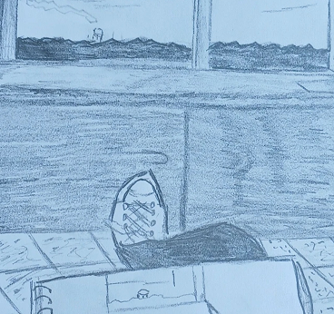

Art piece 1

When making this art piece I was thinking why not rip off a great artist and call it my own original work. That is why this piece exists guys. I am just kidding I was just inspired by vincent van gogh and made this image in his style.
Art piece 2

This piece though has to be my favorite art piece that I have created. It is an alien structure in the middle of a wheat field in Nebraska. Why I chose nebraska of all places will be just as a mystery to you as it is to me. Just felt right I guess.
Art piece 3
Nothing really special here, it literally is just a picture of me drawing myself drawing. I really only drew this drawing because I was bored one day in my dorm and had nothing else to do, so I thought why not draw myself drawing.